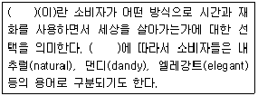
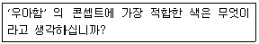
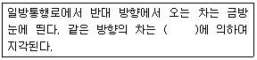
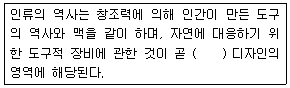
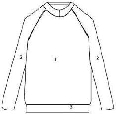
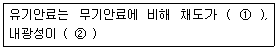
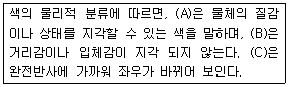

컬러리스트기사 (2017-05-07 기출문제)
1과목: 색채심리 마케팅
1. 소비자 행동은 외적,환경적 요인과 내적,심리적 요인에 영향을 받는다. 다음 중 소비자의 내적,심리적 영향 요인이 아닌 것은?
- 경험, 지식
- 개성
- 동기
- 준거집단
(정답률: 83%)

2. 컬러 마케팅의 이론으로 적합하지 않은 것은?
- 컬러 마케팅의 궁극적인 목표는 제품의 판매를 늘리는 것이다.
- 글로벌화된 현대 사회에 선진국에서 성공한 제품의 색채는 다른 국가에서도 성공을 보장 받는다.
- 우리나라는 1990년대부터 컬러를 마케팅 수단으로 삼아 제품판매 경쟁에 돌입하였다
- 컬러 마케팅에 있어 광고의 컬러 선정은 목표시장 집단의 색채 감성을 파악하여 이를 활용하여야 한다.
(정답률: 87%)
3. 항상 동일한 색을 고집하고 변화에 대한 거부감을 가지며 최신유행에 흔들리지 않는 색채반응 유형은?
- 컬러 포워드 (Color Forward) 유형
- 컬러 프루던트 (Color Prudent) 유형
- 컬러 로열 (Color Loyal) 유형
- 컬러 트렌드 (Color Trend) 유형
(정답률: 49%)
4. 다음의 ( ) 안에 공통적으로 들어갈 용어는?

- 소비유형
- 소비자행동
- 라이프스타일
- 문화체험
(정답률: 74%)
5. 소비자 욕구 변화 중 사회 경제적인 배경의 영향으로 가장 거리가 먼 것은?
- 존경, 성취의 욕구 변화
- 소비지출 구조의 변화
- 개방화와 국제화의 변화
- 인구 및 가족 구족의 변화
(정답률: 44%)
6. 시장세분화의 기준 중 행동분석적 속성의 변수는?
- 사회계층
- 라이프스타일
- 상표충성도
- 개성
(정답률: 45%)
7. 유행색에 관한 설명으로 틀린 것은?
- 유행색은 어떤 시기에 집중해서 시장을 점유한 상품색을 가리킨다.
- 유행색을 특징짓는 것은 발생, 성장, 성숙, 쇠퇴의 사이클을 갖는 유동성이다.
- 젊은 연령층에서 유행색은 특징적으로 나타나는 경향이 있다.
- 귀속의식이 강한 집단일수록 유행색의 전파는 느리지만 그 수명은 길다.
(정답률: 60%)
8. 다음과 같이 색과 그 상징이나 연상의 사례를 짝지은 것 중 적절하지 않은 것은?
- 검정 - 죽음, 어둠
- 회색 - 결백, 냉혹
- 파랑 - 차가움, 하늘
- 빨강 - 정열, 사과
(정답률: 85%)
9. 색채가 주는 일반적인 심리적 작용이 아닌 것은?
- 온도감
- 거리감
- 크기감
- 입체감
(정답률: 50%)
10. 상품의 마케팅 전략 중 핵심적인 요소로 등장하면서 제품의 패키지, 로고, 광고 등에 공통요소로 사용되는 기초적인 요소는?
- 색채
- 명도
- 채도
- 재질
(정답률: 84%)
11. 색채시장조사 시 다음과 같은 설문지의 유형과 특징으로 옳은 것은?

- 개방형으로 의견을 자유롭게 응답
- 폐쇄형으로 2개 이상의 응답 가운데 하나를 선택
- 개방형으로 질문에 대한 전문지식이나 견해에 대한 응답
- 폐쇄형으로 미세한 차이의 반복질문을 통해 공통 의견 추출
(정답률: 54%)
12. 제품의 수명주기에 따른 마케팅 믹스 전략에 대한 설명이 틀린 것은?
- 도입기 : 기초적인 제품을 원가가산가격으로 선택적 유통을 실시하며 제품인지도 향상을 위한 광고를 실시한다.
- 성장기 : 서비스나 보증제와 같은 방법으로 제품을 확대시키고 시장침투가격으로 선택적 유통을 실시하며 시장 내 지명도 향상과 관심형성을 위한 광고를 실시한다.
- 성숙기 : 상품과 모델을 다양화하며 경쟁대응 가격으로 집약적 유통을 실시하고 브랜드와 혜택의 차이를 강조한 광고를 실시한다.
- 쇠퇴기 : 취약 제품은 폐기하며 가격인하를 실시하고 선택적 유통으로 수익성이 적은 유통망은 폐쇄하며 충성도가 강한 고객 유치를 위한 광고를 실시한다.
(정답률: 14%)
13. 색채와 촉감의 연관성이 바르게 연결된 것은?
- 어두운 빨강 : 말랑말랑하고 부드러운 느낌
- 밝은 노랑 : 견고하고 굵은 느낌
- 밝은 하늘색 : 부드러운 느낌
- 선명한 청록 : 건조한 느낌
(정답률: 79%)
14. 시장세분화 전략에 해당하지 않은 것은?
- 하위문화의 소비 시장 분석
- 선호집단에 대한 분석
- 선호제품에 대한 탐색
- 소비자생활 지역에 대한 탐색
(정답률: 39%)
15. 국가별, 문화별로 색채 선호 및 상징은 다르게 나타난다. 다음 중 색채에 대한 문화별 차이를 설명한 사례로 적절하지 않은 것은?
- 서양의 흰색 웨딩드레스 한국의 소복
- 중국의 붉은 명절 장식 서양의 붉은 십자가
- 미국의 청바지 카톨릭 성화 속 성모마리아의 청색 망토
- 프랑스 황제궁의 황금 대문 중국 황제의 황색 옷
(정답률: 63%)
16. 색채심리를 이용한 색채요법에 대한 설명 중 틀린 것은?
- Blue : 해독, 방부제, 결핵 등에 효과가 있다.
- Red : 빈혈, 무기력증에 효과적이다.
- Yellow : 신경질환 및 우울증 등 가벼운 증상에 효과적이다.
- Purplr : 정신질환, 피부질환 등 가벼운 증상에 효과적이다.
(정답률: 60%)
17. 일반적으로 '사과는 무슨 색?' 하고 묻는 질문에 '빨간색' 이라고 답하는 경우처럼, 물체의 표면색에 대해 무의식적으로 결정해서 말하게 되는 색을 무엇이라 하는가?
- 항상색
- 무의식색
- 기억색
- 추측색
(정답률: 57%)
18. 브랜드 개념의 관리는 도입기, 심화기, 강화기 순으로 나눌수 있다. 브랜드 유형에 따른 관리의 단계와 설명이 잘못된것은?
- 효능충족 브랜드는 일상생활에서 실제적인 문제를 해결해 줄 수 있어야 한다.
- 긍지추구 브랜드는 도입기에 구매의 제한성을 강조한다.
- 경험유회 브랜드는 강화기에 동일한 이미지통합전략으로 라이프스타일을 형성하게 된다.
- 브랜드 개념의 관리단계는 시장 상황에 따라 피동적으로 변해야 한다.
(정답률: 39%)
19. 일반적인 색채선호원리와 가장 거리가 먼 것은?
- 아기들은 장파장의 색을 선호한다.
- 성인이 되면서 단파장의 색들을 선호한다.
- 이지적인 사람들은 장파장의 색을 선호한다.
- 여성들은 밝고 맑은 톤을 선호한다.
(정답률: 78%)
20. 건축물의 용도와 색채계획이 적합한 경우는?
- 식당 내부 - 하늘색
- 병원 수술실 - 분홍색
- 공장 내부 - 주황색
- 도서관 내부 - 연한 초록색
(정답률: 70%)
2과목: 색채디자인
21. 디자인 아이디어의 발상 기법으로 자연관찰이 중요한 이유로 거리가 먼 것은?
- 자연과 자연 변화의 관찰을 통해 미적 감정을 개발할 수 있기 때문
- 자연물의 비례와 형태에서 아름다운 조형언어를 추출할 수 있기 때문
- 자연물에 쓰인 효율적 구조를 분석하여 디자인 설계에 응용할 수 있기 때문
- 자연물에 대한 묘사력과 표현력을 개발할 수 있기 때문
(정답률: 49%)
22. 패션 색채계획에 활용할 '소피스티케이티드(sophisticated)' 이미지에 대한 설명이 옳은 것은?
- 고급스럽고 우아하며 품위가 넘치는 클랙식한 이미지와 완숙한 여성의 아름다움을 추구
- 현대적인 샤프함과 합리적이면서도 개성이 넘치는 이미지로 다소 차가운 느낌
- 어른스럽고 도시적이며 세련된 감각을 중요시 여기며 지성과 교양을 겸비한 전문직 여성의 패션스타일을 대표하는 이미지
- 남성정장 이미지를 여성패션에 접목시켜 격조와 품위를 유지하면서도 자립심이 강한 패션 이미지를 추구
(정답률: 63%)
23. 다음 중 인상파에 대한 설명이 아닌 것은?
- 주로 야외에서 작업하면서 자연의 순간적 입장을 묘사하였다.
- 회화에 있어서 색채를 소재가 아닌 주체의 직접적인 표현으로 삼았다.
- 마티스, 루오가 대표적이며 검정색의 사용, 강한 원색대비를 사용하였다.
- 병치 혼색의 개념을 소개한 슈브뢸, 루드의 영향을 받아 점묘법을 이용한 그림을 그리기도 하였다.
(정답률: 57%)
24. 다음의 ( ) 속에 가장 적절한 말은?

- 페쇄성
- 근접성
- 지속성
- 유사성
(정답률: 50%)
25. 사용자가 제품, 서비스 또는 시스템을 사용하거나 체험하는데 있어 제품과의 상호작용을 디자인의 주요소로 고려하여 디자인하는 분야는?
- 그린 디자인
- 지속가능한 디자인
- 유니버설 디자인
- UX 디자인
(정답률: 39%)
26. 디자인의 조형 요소에 대한 설명으로 틀린 것은?
- 점을 확대하면 면이 되고, 원형이나 정다각형이 축소되면 점이 된다.
- 선은 방향이나 굵기, 모양 등에 의해 다양한 시각적 느낌을 만들어 낼 수 있다.
- 입체는 길이, 너비, 깊이, 형태와 공간, 표면, 방위, 위치 등의 특징을 가진다.
- 색채의 배색은 주변의 변화와 조화에 따라 가치가 결정되지 않는다.
(정답률: 58%)
27. 디자인(Design)의 라틴어 어원은?
- 데지그나레(designare)
- 디세뇨오(desegno)
- 데생(dessein)
- 데지그 (desig)
(정답률: 69%)
28. 옥외광고, 전단 등 제품의 판매촉진을 위한 모든 광고, 홍보활동을 뜻하는 것은?
- POP(Point Of Purchase) 광고
- SP(Sales Promotion) 광고
- Spot 광고
- Local 광고
(정답률: 49%)
29. 다음 중 일반적인 주거 공간별 색채계획 중 적절하지 않은 것은?
- 침실 – 거주자가 원하는 색채 중 부드러운 색조로 구성한다.
- 거실 – 넓은 거실의 통일성을 위해 벽과 바닥을 동일색으로 한다.
- 어린이방 – 아이가 좋아하는 색을 밝은 색조로 구성한다.
- 욕실 – 청결한 이미지를 표현하도록 밝은 한색 계열을 적용한다.
(정답률: 67%)
30. 다음의 ( )에 알맞은 말은?

- 시각
- 환경
- 제품
- 멀티미디어
(정답률: 62%)
31. 팝아트(Pop art)에 관한 설명 중 옳은 것은?
- 인간의 시지각 원리에 근거한 것이다.
- 1960년대에 뉴욕을 중심으로 전개된 대중예술이다.
- 여성의 주체성을 찾고자 한 운동이다.
- 분해, 풀어헤침 등 파괴를 지칭하는 행위이다.
(정답률: 62%)
32. 기계가 지닌 차갑고 역동적 아름다움을 조형예술의 주제로까지 높였다는 것과 스피드감이나 운동을 표현하기 위해 시간의 요소를 도입하려고 시도한 예술운동은?
- 구성주의
- 옵아트
- 미니멀리즘
- 미래주의
(정답률: 40%)
33. 패션디자인 분야는 유행의 흐름과 유행색에 많은 영향을 받는다. 국제유행색위원회인 인터컬러(INTER-COLOR)에 대한 설명으로 틀린 것은?
- 파리에 본부를 두고 있다.
- 생산자를 위한 유행 예측색을 제공한다.
- 특정지역의 마켓상황과 분위기를 반영한다.
- 트렌드에 있어 가장 앞선 색채정보를 제시한다.
(정답률: 64%)
34. 제1차 세계대전 중 네덜란드에서 발행된 새로운 미술운동의 기관지 이름에서 연유된 것으로 유럽 추상미술의 지도적 역할을 했던 양식이라는 의미의 미술운동은?
- 유겐트스틸
- 데스틸
- 모더니즘
- 구성주의
(정답률: 47%)
35. 빅터 파파넥(Victor Papanek)이 말한 디자인의 복합기능(Function complex)으로 틀린 것은?
- 용도에 적합해야 한다는 것은 디자인의 기본적 전제
- 일시적 유행과 세태에 민감한 변화
- 재료나 도구를 타당성 있게 사용하는 것
- 재료를 다루는 작업과정을 합리적 또는 효과적으로 습득하는 것은 최상의 디자인 방법
(정답률: 67%)
36. 디자인의 원리인 조화에 대한 설명 중 틀린 것은?
- 디자인의 조화는 부분의 상호관계가 서로 분리되거나 배척하지 않은 상태를 말한다.
- 유사조화는 변화의 다른 형식으로 서로 다른 부분의 조합에 의해서 생긴다.
- 디자인의 조화는 여러 요소들의 통일과 변화의 정확한 배합과 균형에서 온다.
- 조화는 크게 유사조화와 대비조화로 나눌 수 있다.
(정답률: 55%)
37. 디자인 행위의 초기 단계에서 앞으로 완설될 작품에 대한 개념을 설정하는 것은?
- 모듈(Module)
- 콘셉트(Concept)
- 디자인(Design)
- 게슈탈트(Gestalt)
(정답률: 65%)
38. 그림과 같은 티셔츠의 색채기획을 하려고 한다. 티셔츠의 번호가 적힌 부분에 대한 색채기획 중 적절하지 않은 것은? (1 : 몸통, 2 : 양쪽 팔 3 : 목둘레, 아랫단) 색채를 처리하는 장치의 컬러 재현 특성을 기록하는 과정은?

- 1번 부분은 가장 넓은 부분으로 주조색을 적용하였다.
- 2번 부분에는 1번 부분에 적용한 색과 색차가 반드시 큰 배색을 해야 한다.
- 3번 부분에 1,2번과는 구별되는 색으로 강조하였다.
- 1번의 색을 밝은 노란색으로 기획하여 전체적인 분위기를 밝게 하였다.
(정답률: 58%)
39. 일정한 목적에 도달하는데, 적합한 대상 또는 행위의 성질을 말하며, 원하는 작품의 제작에 있어서 실제의 목적에 알맞도록 하는 것은?
- 합목정성
- 경제성
- 독창성
- 질서성
(정답률: 70%)
40. 다음 중 환경디자인의 목적을 표현한 것으로 적절하게 기술한 내용이 아닌 것은?
- 삶의 질 향상
- 자연과 인간 문명의 조화
- 환경 문제 해결
- 개발이익 극대화
(정답률: 75%)
3과목: 색채관리
41. 표면색의 시감비교 시 어두운 색을 비교하는 경우에 적합한 작업면의 조도는?
- 1000 lx
- 2000lx
- 3000 lx
- 4000lx
(정답률: 60%)
42. 안료에 대한 설명이 틀린 것은?
- 자연에서 얻은 천연무기안료는 입자가 거칠고 불규칙하다.
- 무기안료는 유기안료보다 색채가 다양하고 선명하며 내광성이 좋다.
- 물이나 기름, 알코올 등의 유기용제에 용해되지 않는다.
- 동물성 유기안료는 대부분 견뢰도가 떨어지고 안정적이지 못하다.
(정답률: 59%)
43. 다음 중 CCM(Computer Color Matching)에 대한 설명이 아닌 것은?
- 소프트웨어산업과 정밀측정기기인 스펙트로 포토미터의 발전으로 정밀한 조색을 실현하는 방법이다.
- 컴퓨터 장치를 이용하여 정밀 측색하여 자동으로 구성된 색료(colorants)를 정밀한 비율로 자동 조절 공급한다.
- 메타메리즘을 예측할 수 있어 아이소머리즘을 실현할 수 있다.
- 정확한 양으로 최대의 컬러런트로 조색하므로 원가가 절감될 수 있다.
(정답률: 22%)
44. PCS(Profile Connection Space)에 대한 설명으로 적절한 것은?
- PCS의 체계는 sRGB와 CMYK 체계를 사용한다.
- PCS의 체계는 CIE XYZ와 CIE LAB를 사용한다.
- PCS의 체계는 디바이스 종속 체계이다.
- ICC에서 입력의 색공간과 출력의 색공간은 일치한다.
(정답률: 48%)
45. KS A 0064 : 색에 관한 용어에서 색역(color gamut)의 정의로 옳은 것은?
- 특정 조건에 따라 발색되는 모든 색을 포함하는 색도 좌표도 또는 색 공간 내의 영역
- 2가지의 색자극이 등색이 되는 것을 나타내는 대수적 또는 기하학적 표시
- 두 색의 지각된 색의 간격, 또는 그것을 수량화한 값
- 색의 상관성 표시에 이용하는 3차원 공간
(정답률: 55%)
46. 다음 중 탄소 함유량이 분류의 중요한 요인이며 함유된 탄소량에 따라 성질이 달라지기도 하는 것은?
- 철재
- 플라스틱
- 섬유
- 페인트
(정답률: 50%)
47. 다음 중 안료의 검사 항목이 아닌 것은?
- 색채편차와 내광성
- 은폐력과 착색력
- 흡유율와 흡수율
- 고착력과 접착력
(정답률: 37%)
48. CCM 소프트웨어에 대한 설명 중 옳은 것은?
- 배합 비율은 도료와 염료에 기본적으로 똑같이 적용된다.
- 빛의 흡수계수와 산란계수를 이용하여 배합비를 계산한다.
- Formulation 부분에서 측색과 오차 판정을 한다.
- Quality Control 부분에서 정확한 컬러런트 양을 배분한다.
(정답률: 66%)
49. 색채의 시감비교에 대한 설명이 틀린 것은?
- 색채의 시감비교는 규정된 표준광원 아래서 조명 관측조건을 고려하여 광택을 피하여 관측한다.
- 시편에 광선이 고르게 도달하도록 하고 관측 전에 색채적응이 일어나지 않도록 한다.
- 시료색들은 눈에서 약 300mm 떨어뜨린 위치에, 같은 평면상에 인접하여 배치한다.
- 비교의 정밀도를 향상시키기 위해서 가끔씩 시료색의 위치를 바꿔가며 비교한다.
(정답률: 46%)
50. 효율이 높고 소형으로 고출력과 배광제어가 비교적 쉬워 건물의 외벽조명, 정원, 공항, 경기조명이나 분수 조명 등에 사용되고 있는 조명용 광원은?
- 백열등
- 방전등
- 형광등
- 할로겐등
(정답률: 33%)
51. 육안조색의 방법 중 틀린 것은?
- 시편의 색채률 D65광원을 기준으로 조색한다.
- 샘플색이 시편의 색보다 노란색을 띨 경우, b*값이 낮은 도료나 안료를 섞는다.
- 샘플색이 시편의 색보다 붉은색을 띨 경우, a*값이 낮은 도료나 안료를 섞는다.
- 조색 작업면은 검정색으로 도색된 환경에서 2000 Ix 조도의 밝기를 갖추도록 한다.
(정답률: 67%)
52. ICC 프로파일 사양에서 정의된 렌더링의도(rendering intent)의 특성에 관한 설명 중 틀린 것은?
- 상대색도(relative colorimetric) 렌더링은 입력의 흰색을 출력의 흰색으로 매핑하여 출력한다.
- 절대색도(absolute colorimetric) 렌더링은 입력의 흰색을 출력의 흰색으로 매핑하지 않는다.
- 채도(saturation) 렌더링은 입력측의 채도가 높은 색을 출력에서도 채도가 높은 색으로 변환한다.
- 지각적(perceptual) 렌더링은 입력 색상 공간의 모든 색상을 유지시켜 전체색을 입력색으로 보전한다.
(정답률: 27%)
53. 색차 관리에 이용될 수 있는 색공간 혹은 색차식으로 볼 수 없는 것은?
- CIEDE2000
- CIELUV
- CMC(1:c)
- HSV
(정답률: 43%)
54. 색채 디바이스 간의 호환성을 확보하기 위한 노력에 대한 설명으로 적합하지 않은 것은?
- 국제적인 기구를 통한 측색기반의 디바이스 특성을 바탕으로 색채조절을 호환성 있게 실행하려는 노력
- 각 디바이스의 특성을 공개하고 이에 적합한 색채조절이 이루어지도록 표준화하는 노력
- 컬러 어피어런스 모델이 프로파일 연결공간의 전후에서 적용
- 입력장치와 출력장치를 연결하는 프로파일 연결공간에서는 입력장치의 RGB 색채공간을 사용
(정답률: 58%)
55. 조건등색에 대한 설명으로 틀린 것은?
- 조건등색은 물체색의 분광분포가 같아도 일어날 수 있다.
- 조건등색이 성립하는 2가지 색 자극을 메타머(metamer)라고 한다.
- 분광 분포가 다른 2가지 색자극이 특정 관측 조건에서 동등한 색으로 보이는 것이다.
- 특정 관측 조건이란 관측자나 시야, 물체색인 경우에는 조명광의 분광분포에 따른 차이를 가리킨다.
(정답률: 44%)
56. 정확한 색채 측정을 위한 백색기준물(White reference)의 설명으로 틀린 것은?
- 충격, 마찰, 광조사, 온도, 습도 등의 영향을 받지 않아야한다.
- 분광식 색채계에서의 백색기준물은 분광흡수율을 기준으로 한다.
- 백색기준물 자체의 색이 변하면 측정값들도 직접적인 영향을 받게 된다.
- 백색기준물은 국가교정기관을 통하여 국제표준으로의 소급성이 유지되는 교정값을 갖고 있어야한다.
(정답률: 45%)
57. 색채 영역과 혼색방법에 관한 설명이 틀린 것은?
- 모니터 화면의 형광체들은 가법혼색의 주색특징에 따라 선별된 형광체를 사용한다.
- 감법혼색은 각 주색의 파장영역이 좁을수록 색역이 확장된다.
- 컬러프린터의 발색은 병치혼색과 감법혼색을 같이 활용한 것이다.
- 감법혼색에서 시안(Cyan)은 600nm 이후의 빨간색 영역의 반사율을 효과적으로 감소시킨다.
(정답률: 32%)
58. 다음 중 육안 검색 시 사용하는 주광원이나 보조광원이 아닌것은?(오류 신고가 접수된 문제입니다. 반드시 정답과 해설을 확인하시기 바랍니다.)
- 표준광 C
- 표준광 D50
- 표준광 A
- 표준광 F8
(정답률: 24%)
59. 분광반사율의 설명으로 틀린 것은?
- 물체 고유의 특성으로 색채를 결정짓는 중요한 요소이다.
- 색채시료에 입사하는 빛이 반사할 때 각 파장별로 물체의 특성에 따라 반사율이 다르기 때문에 나타난다.
- 채도가 높은 색은 분광반사율의 파장별 차이가 적어지고, 채도가 낮은 경우는 그 차이가 크게 나타난다.
- 같은 색이라도 염료의 종류에 따라 달라질 수가 있다
(정답률: 61%)
60. 다음은 무기안료와 유기안료를 비교한 것이다. ( ) 안에 들어갈 내용은?

- ① 높고 ② 좋다
- ① 낮고 ② 좋다
- ① 낮고 ② 나쁘다
- ① 높고 ② 나쁘다
(정답률: 42%)
4과목: 색채지각론
61. 빈칸에 들어갈 용어가 순서대로(A-B-C) 바르게 연결된 것은?

- 표면색 - 공간색 - 경영색
- 표면색 - 면색 - 경영색
- 면색 - 공간색 - 표면색
- 면색 - 표면색 - 공간색
(정답률: 43%)
62. 체조선수의 움직임을 뚜렷하고 잘 보이게 만들려고 한다. 선수복에 가장 적합한 색은?
- 장파장색으로 고명도 저채도의 색
- 단파장색으로 중명도 고채도의 색
- 장파장색으로 중명도 고채도의 색
- 단파장색으로 고명도 저채도의 색
(정답률: 55%)
63. 빛의 혼합에 관한 설명 중 옳은 것은?
- 녹색 빛과 파란색 빛을 한 곳에 비추어 나타나는 색은 400nm ~ 500nm의 파장을 갖는다.
- 녹색 빛과 파란색 빛을 한 곳에 비추어 나타나는 색은 500nm ~ 600nm의 파장을 갖는다.
- 빨간색 빛과 녹색 빛을 한 곳에 비추어 나타나는 색은 400nm ~ 500nm의 파장을 갖는다.
- 빨간색 빛과 녹색 빛을 한 곳에 비추어 나타나는 색은 600nm ~ 700nm의 파장을 갖는다.
(정답률: 26%)
64. 색의 대비 현상에 관한 설명으로 틀린 것은?
- 하얀 바탕 위에 명도 5인 회색을 놓았을 때 회색이 명도 5보다 더 어둡게 보인다.
- 노란 바탕 위에 녹색을 놓았을 때 녹색에 약간 노란색 기미를 띤 것처럼 보인다
- 선명한 파란 바탕 위에 연한 하늘색을 놓았을 때 하늘색의 채도가 낮아 보인다.
- 청록 바탕 위에 회색을 놓았을 때 회색이 붉은색 기미를 띤 것처럼 보인다.
(정답률: 24%)
65. 중간혼합에 대한 설명으로 틀린 것은?
- 중간혼합에는 회전혼합과 병치혼합의 두 가지 종류가 있다.
- 여러 색실로 직조된 직물은 병치혼색의 한 종류이다.
- 병치혼색은 개개 점의 색으로 지각된다.
- 컬러 TV의 화면, 인쇄의 망점 등에 중간혼합이 이용된다.
(정답률: 42%)
66. 색의 온도감에서 어느 쪽에도 기울지 않는 색으로만 묶인 것은?
- 녹색, 보라
- 노랑, 주황
- 파랑, 연두
- 자주, 빨강
(정답률: 63%)
67. 다음 중 색이 갖는 감정효과에 관한 설명으로 틀린 것은?
- 따뜻한 색이 차가운 색보다 진출되어 보인다.
- 밝은 색이 어두운 색보다 진출되어 보인다.
- 명도가 높을수록 팽창되어 보인다.
- 차가운 색이 따뜻한 색보다 팽창되어 보인다.
(정답률: 70%)
68. 먼셀 색상환의 기준색 빨강(red)을 먼셀기호로 표시한 것은?
- 10R 6/10
- 5R 4/14
- 5YR 6/12
- 5P 3/12
(정답률: 64%)
69. 다음 중 옷 상점의 조명 선택 시 색의 연색성을 높일 수 있는 상황은?
- 조명의 색에 상관없이 조도를 최대한 밝게 높여준다.
- 조명의 색에 상관없이 조도를 높여준다.
- 분광분포가 장파장영역에 집중된 백열등을 사용한다.
- 분광분포가 천연 주광에 가까운 조명을 사용한다.
(정답률: 36%)
70. 망점 인쇄된 컬러 인쇄물에서 관찰 가능한 혼색의 종류는?
- 감법혼색과 회전혼색
- 가법혼색과 병치혼색
- 가법혼색과 회전혼색
- 감법혼색과 병치혼색
(정답률: 50%)
71. 다음 중 빛의 파장에 따라 장파장에서부터 단파장의 순으로 배열한 것은 ?
- 빨강, 주황, 노랑, 초록, 파랑, 보라
- 흰색, 회색, 검정
- 선명한 빨강, 진한 빨강, 흐린 빨강, 회빨강
- 선명한 노랑, 밝은 노랑, 연한 노랑
(정답률: 71%)
72. 하얀 바탕 위의 회색은 어둡게 보이고, 검정 바탕 위의 회색은 밝게 보이는 것과 관련한 대비는?
- 색상대비
- 채도대비
- 명도대비
- 보색대비
(정답률: 66%)
73. 노란 색종이를 조그맣게 잘라 여러 가지 배경색 위에 놓았다. 다음 중 어떤 배경색에서 가장 선명한 노란색으로 보이는가?
- 주황색
- 연두색
- 파란색
- 빨강색
(정답률: 67%)
74. 색채계별 색의 속성 중 온도감과 가장 관련이 높은 것은?
- 먼셀 색체계 : V
- NCS 색체계 : Y, R, B, G
- L*a*b* 색체계 : L*
- Yxy 색체계 : Y
(정답률: 43%)
75. 무대에서 하얀 발레복을 입은 무용수에게 빨간 조명과 초록 조명이 동시에 투사되면 발레복은 무슨 색으로 나타나는가?
- 주황
- 노랑
- 파랑
- 보라
(정답률: 57%)
76. 푸르킨예 현상에 대한 설명이 옳은 것은?
- 저녁에는 붉은 복장보다는 청색 복장 쪽이 멀리서도 눈에 잘띈다.
- 백열전구를 켜는 순간 노란 빛을 느끼지만, 곧 흰 종이는 희게, 파랑은 파랗게, 원색에 가깝게 보인다.
- 밝기나 조명의 변화에 따라서 망막자극의 변화가 비례하지 않은 현상이다.
- 영화관에 들어갈 때 처음에는 주위를 식별할 수 없지만 시간이 좀 지나면 식별이 가능하게 된다.
(정답률: 53%)
77. 도로의 터널 출입구 부분에는 조명이 집중되어 있는 반면 중심부에는 조명의 수가 적다. 이것은 무엇을 고려한 것인가?
- 잔상현상
- 병치혼합현상
- 명암순응현상
- 색각현상
(정답률: 67%)
78. 감법혼합이나 가법혼합의 3원색에서 서로 인접한 두 색을 동일하게 혼합 시 만들어지는 색은?
- 보색
- 중간색
- 원색
- 중성색
(정답률: 73%)
79. 잔상에 대한 설명 중 틀린 것은?
- 잔상이 원래의 감각과 같은 밝기나 색상을 가질 때, 이를 양성 잔상이라 한다.
- 잔상이 원래의 감각과 반대의 밝기 또는 색상을 가질 때, 이를 음성 잔상이라 한다.
- 양성 잔상은 색상, 명도, 채도 대비와 관련이 있다.
- 양성 잔상은 원래의 자극과 같아서, 다음에 오는 자극을 더 강하게 할 수 있다.
(정답률: 23%)
80. 눈의 세포인 추상체와 간상체에 대한 다음 설명 중 옳은 것은?
- 간상체에 의한 순응이 추상체에 의한 순응보다 신속하게 발생한다.
- 간상체는 빛의 자극에 의해 빨강, 노랑, 녹색을 느낀다.
- 어두운 곳에서 추상체가 활동하는 밝기의 순응을 암순응이라고 한다.
- 간상체는 약 500nm의 빛에 가장 민감하며, 추상체 시각은 약 560nm의 빛에 가장 민감하다.
(정답률: 39%)
5과목: 색채체계론
81. L*a*b* 색공간 읽는 법에 대한 설명으로 옳은 것은?
- L* : 명도, a* : 빨간색과 녹색방향, b* : 노란색과 파란색 방향
- L* : 명도, a* : 빨간색과 파란색방향, b* : 노란색과 녹색방향
- L* : R(빨간색), a* : G(녹색), b* : B(파란색)
- L* : R(빨간색), a* : Y(노란색), b* : B(파란색)
(정답률: 65%)
82. 문 스펜서(Moon Spencer)의 색채조화론 중 색상이나 명도, 채도의 차이가 아주 가까운 애매한 배색으로 불쾌감을 주는 범위는?
- 유사조화
- 눈부심
- 제1부조화
- 제2부조화
(정답률: 52%)
83. 일반적으로 색을 표시하거나 전달하는 방법에 관한 설명 중 틀린 것은?
- 개나리색, 베이지, 쑥색 등과 같은 계통색 이름으로 표시할 수있다.
- 기본색이름이나 조합색이름 앞에 수식형용사를 붙여서 아주 밝은 노란 주황, 어두운 초록 등으로 표시한다.
- NCS 색체계는 S5020 - B40G로 색을 표기한다.
- 색채표준이란 색을 일정하고 정확하게 측정, 기록, 전달, 관리하기 위한 수단이다.
(정답률: 36%)
84. DIN 색체계에 대한 설명으로 옳은 것은?
- 표기방법은 색상(T), 포화도(S), 백색도(W)로 한다.
- 현재 사용되고 있는 수정된 DIN 색체계는 C 광원에서 검색을 하여야 한다.
- 오스트발트 색체계를 모델로 한 독일의 공업규격으로 CIE 체계로 편입되지는 못하였다.
- 산업의 발전과 통일된 규격을 위하여 개발되어 독일 산업규격의 모델이 되었다.
(정답률: 49%)
85. NCS 체계를 구성하고 있는 기초적인 6가지 색은?
- 흰색(W), 검정(S), 노랑(Y). 주황(O), 빨강(R), 파랑(B)
- 노랑(Y), 빨강(R), 녹색(G), 파랑(B), 보라(P), 흰색(W)
- 시안(C), 마젠타(M), 노랑(Y), 검정(K), 흰색(W), 녹색(G)
- 빨강(R), 파랑(B), 녹색(G), 노랑(Y), 흰색(W), 검정(S)
(정답률: 64%)
86. 다음은 먼셀색체계의 색표시 방법에 따라 제시한 유채색들이다. 이 중 가장 비슷한 색의 쌍은?
- 2.5R 5/10, 10R 5/10
- 10YR 5/10, 2.5Y 5/10
- 10R 5/10, 2.5G 5/10
- 5Y 5/10, 5PB 5/10
(정답률: 42%)
87. 한국인의 고유 전통 색채의식에 관한 설명 중 틀린 것은?
- 음양오행사상에 의한 오정색의 사용관습
- 시대에 따라 복색이 사회 계급의 표현
- 자연주의적 소박감이 아닌 동적인 인공미
- 정적이고 소박한 이미지
(정답률: 56%)
88. 슈브뢸의 색채 조화론 중 “전체적으로 하나의 주된 색을 이루는 배색은 조화한다.”라는 것으로, 색이 가지는 여러 속성 중 공통된 요소를 갖추어 전체 통일감을 부여하는 배색은?
- 도미넌트(dominant)
- 세퍼레이션(separation)
- 톤인톤(tone in tone)
- 톤온톤(tone on tone)
(정답률: 33%)
89. 배색기법에 대한 설명이 틀린 것은?
- 기조색은 색채계획에서 의도적으로 설정한 주제를 상징하는 색이다.
- 강조색은 주조색과 보조색을 조화롭게 하기 위해 사용되기도 한다.
- 보조색은 배색의 지루함을 덜기 위해서 사용한다.
- 주조색은 직접 사용된 색이며 가장 많은 면에서 주도적인 역할을 한다.
(정답률: 43%)
90. 오스트발트 색체계 기호표시인 12 pa 의 순색 함량은? (단, 백색량 p 3.5, a89 / 흑색량 p96.5, a 11)
- 7.5 %
- 25.5 %
- 65.5 %
- 85.5 %
(정답률: 45%)
91. 오스트발트 색체계의 장점으로 옳은 것은?
- 색상표기가 색상들 사이의 관계성을 명료하게 나타내므로 실용적이다.
- 대칭구조로 각 색이 규칙적인 틀을 가지므로 동색조의 색을 선택할 때 편리하다.
- 인접색과의 관계를 절대적 개념으로 표현하여 일반인들이 사용하기 쉽다.
- 색상, 명도, 채도로 나누어 설명하므로 물체색 관리에 유용하다.
(정답률: 29%)
92. 먼셀 색체계에서 7.5YR의 보색은?
- 7.5BG
- 7.5B
- 2.5B
- 2.5PB
(정답률: 19%)
93. 한국산업표준(KS)의 색명에 관한 설명으로 틀린 것은?
- 색이름을 계통색 이름과 관용색 이름으로 구별한다.
- 유채색의 수식 형용사로는 선명한, 흐린, 탁한, 밝은, 어두운, 진(한), 연(한)이 있다.
- 조합색이름은 기준 색이름 뒤에 색이름 수식형을 붙여 만든다.
- 무채색의 수식 형용사로는 밝은, 어두운이 있다.
(정답률: 42%)
94. 색표와 같은 특징의 착색물체를 정하고, 고유의 번호나 기호를 붙여 물체의 색채를 표시하는 색체계는?
- 혼색계
- 현색계
- 감각계
- 지각계
(정답률: 64%)
95. CIE 색체계의 설명이 틀린 것은?
- 표준광원에서 표준관찰자에 의해 관찰되는 색을 정량화시켜 수치로 만든 것이다.
- 1931년 국제조명회(CIE)는 XYZ 색체계와 Yxy색체계를 발표하였다.
- Y값은 황색의 자극치로 명도치를 나타내고, X는 청색, Z는 적색의 자극치에 일치한다.
- CIE L*a*b* 색체계는 색오차와 근소한 색차이를 표현하기 위해 변화된 색공간이다.
(정답률: 57%)
96. 헌터 랩(Hunter Lab) 색공간의 설명으로 틀린 것은?
- 유럽 디자인계에서만 주로 사용된다.
- 1931년 CIE의 Yxy보다 시각적으로 더욱 통일된 색공간을 제공한다.
- 헌터(R.S. Hunter)에 의해 개발된 것이다.
- 혼색계에 속한다.
(정답률: 45%)
97. 한국의 오방색과 오간색에 대한 설명이 옳은 것은?
- 동방 청색과 서방 백색의 간색은 벽색이다.
- 적색은 북방의 정색으로 화성에 속한다.
- 남방 적색과 서방 백색의 간색은 유황색이다.
- 오간색은 홍색, 벽색, 옥색, 유황색, 자색이다.
(정답률: 49%)
98. NCS 색체계에서 S2040 - Y80R이 뜻하는 의미는?
- 20% 검정색도, 40% 유채색도, 80%의 빨간 색도를 지닌 노랑
- 20% 하얀색도, 40% 검은색도, 80%의 노란 색도를 지니 빨강
- 20% 하얀색도, 40% 유채색도, 80%의 빨간 색도를 지닌 노랑
- 20% 검정색도, 40% 하얀색도, 80%의 노란 색도를 지닌 유채색
(정답률: 56%)
99. 다음 중 먼셀기호 5YR 3/6에 해당하는 관용색명은?
- 밤색
- 베이지
- 귤색
- 금발색
(정답률: 43%)
100. 먼셀 색체계의 명도 속성에 대한 설명으로 옳은 것은?
- 명도의 중심인 N5는 시감 반사율이 약 18%이다.
- 철제 표준 색표집은 N0 ~ N10까지 11단계로 구성되어 있다.
- 가장 높은 명도의 색상은 PB를 띤다.
- 가장 높은 명도를 황산바륨으로 측정하였다.
(정답률: 27%)
설명: 소비자의 내적,심리적 영향 요인은 개인의 경험, 지식, 개성, 동기 등으로 구성된다. 이들은 소비자의 인지, 태도, 행동 등에 영향을 미치는 중요한 요소이다. 반면, 준거집단은 소비자가 자신을 비교하고 모방하는 대상들의 집단으로, 외적,환경적 영향 요인에 해당한다. 따라서, 준거집단은 소비자의 내적,심리적 영향 요인이 아니다.